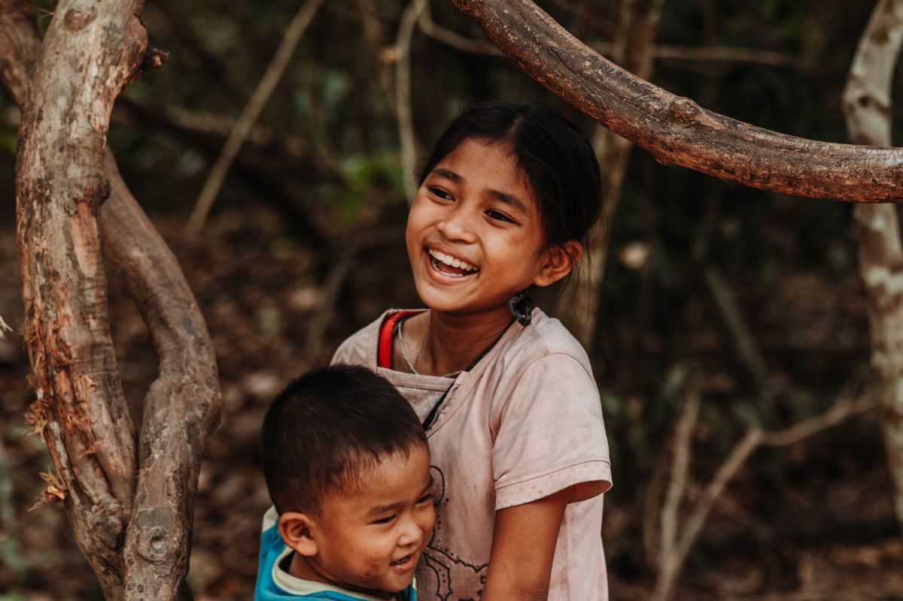
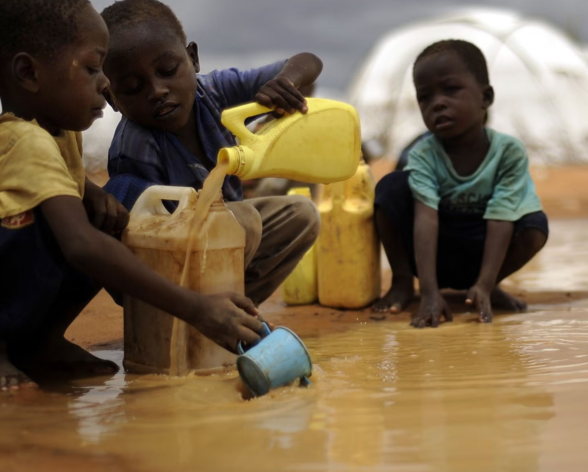
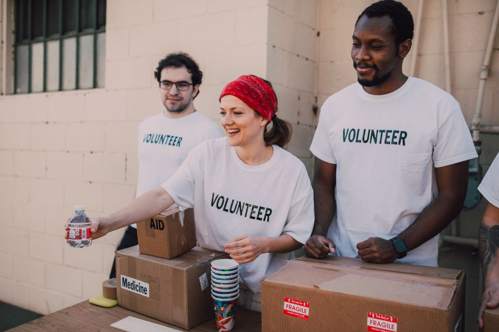
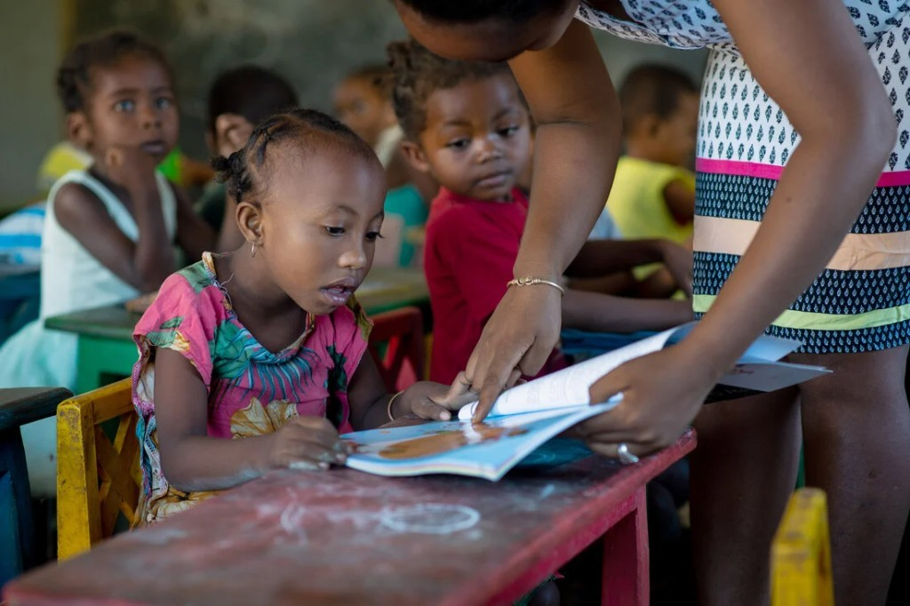
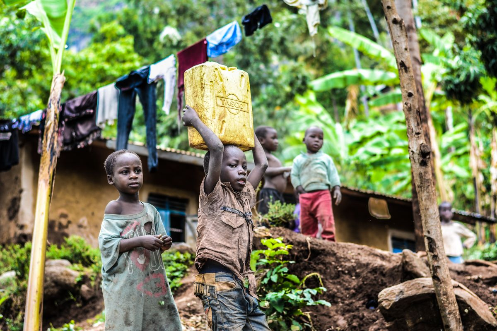
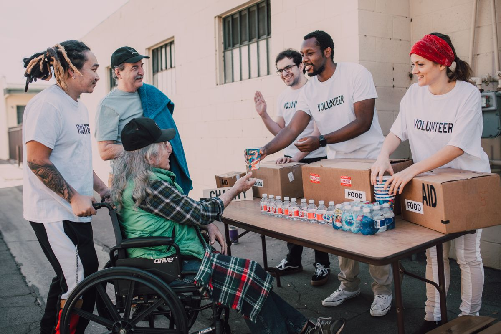
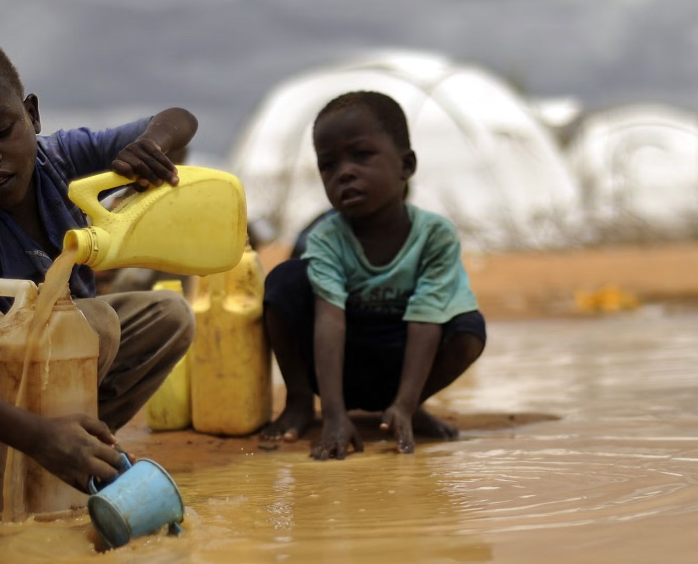
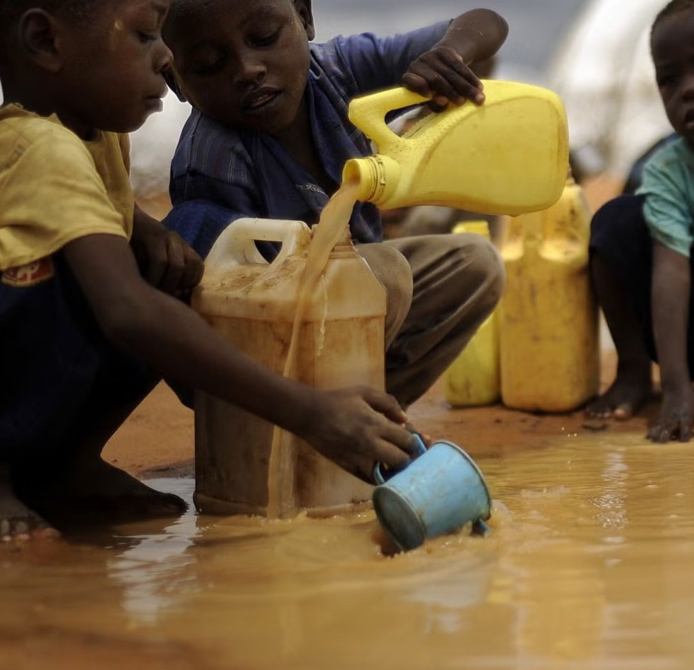
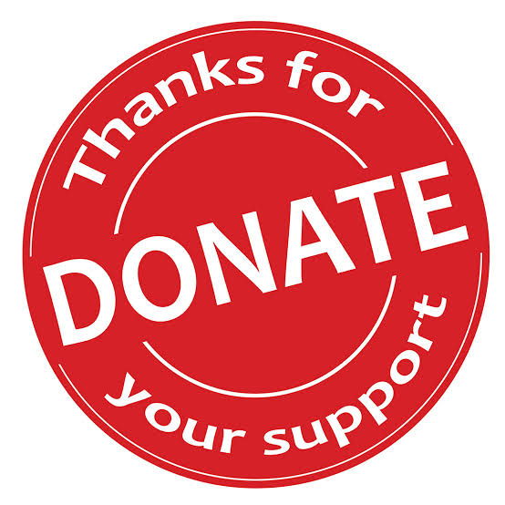

“The filter arrived last week. My little brother stopped missing school from stomach sickness. Clean water at home changed our mornings.”
Choose what to support

Goal KSh 50,000
Safe drinking water at home for a family relying on unsafe sources.
Donate now
Goal KSh 125,000
Clean water supplies and follow-up care for one household.
Donate now
Goal KSh 500,000
Help fund a shared well that serves an entire village.
Donate now
Goal KSh 80,000
School materials so children can learn when water no longer keeps them home.
Donate nowWhy it matters
Clean water is more than a drink. It means fewer sick days, more time in school, and room for play — the ordinary joys childhood should hold.
Your gift helps Kindred fund wells, filters, and local care so communities can thrive. Safe water today. Stronger tomorrows.
Support a causeCommunity
Families, teachers, and neighbours share what clean water means day to day.

“The filter arrived last week. My little brother stopped missing school from stomach sickness. Clean water at home changed our mornings.”

“I walked kilometres for muddy water as a child. Today our village well means my daughter won’t. That is the gift I prayed for.”
“Teachers say attendance is up since the water point opened near school. Children arrive ready to learn, not exhausted from fetching.”

“Our street pooled M-Pesa gifts for family water kits. Three households woke up differently the next week. Kindred made it simple.”

“Not a campaign moment — just kids being kids after the tap was fixed. That ordinary joy is what your gifts buy.”

“I gave what I could this morning. Watching the raised totals move hit differently. A small gift. Real water.”
Funds reach verified water projects — wells, filters, repairs.
Local partners install and maintain what communities can own.
Less disease. More school. A cup that does not cost a future.
